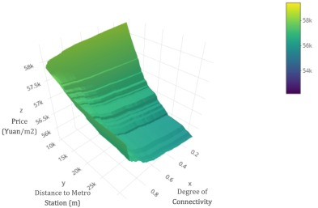

Transportation Studies

Distributive economic impacts of the Bipartisan Infrastructure Law: a case study of Texas applying CGE model
Ziqi Liu, and Ming Zhang
2023 WRSA Conference
[Slides]
Transit Network Effects and the Multi-level Access Premiums
Ziqi Liu, Yang Li, and Ming Zhang
Cities
[Paper]
Can Rural Counties Benefit from High-Speed Rail Investments? Case Study of the Dallas-Houston Bullet Train Line
Ziqi Liu, Ming Zhang
2019 ACSP Conference
[Slides]